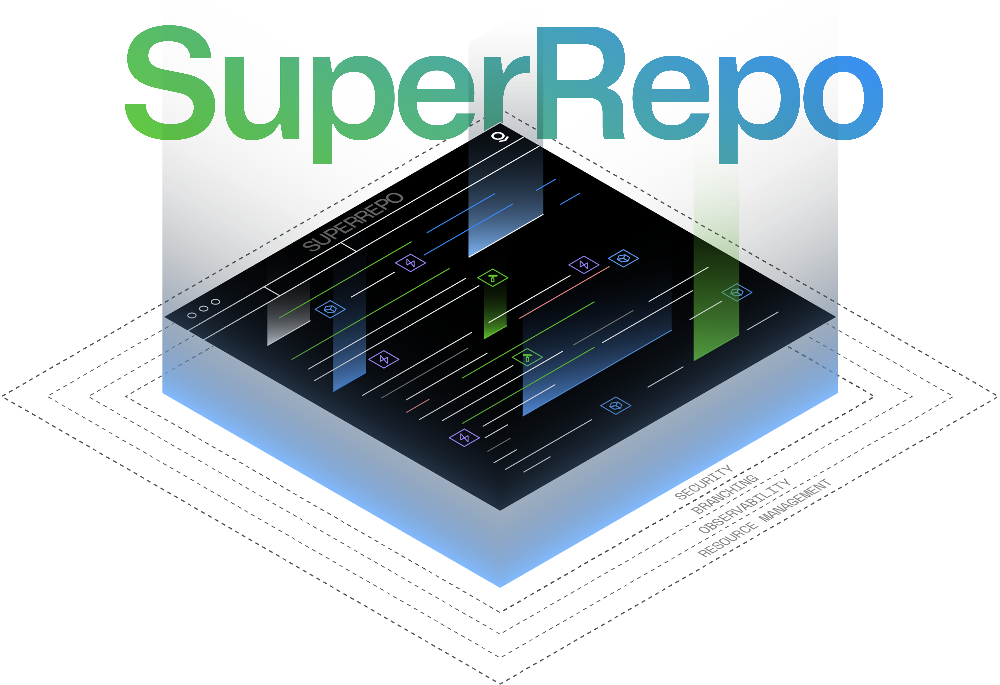

:::callout{theme="neutral" title="Beta"} SuperRepo is in the beta phase of development and may not be available on your enrollment. Functionality may change during active development. :::

SuperRepo is Foundry's new approach to enabling developers to build complex full-stack applications anchored around the Ontology inside a pro-code monorepo. SuperRepos expose an increasing number of the platform's core components, such as functions, the Ontology, and React applications, to allow deeper integration and faster development cycles when developing complex applications.
As more platform features gain first-class SuperRepo support covering an ever-increasing scope of use cases, SuperRepo will be the preferred way of interacting with platform features in a pro-code manner.
SuperRepo aims to improve the application building and delivery experience from two angles:
A central architectural choice of SuperRepo is that it builds around the Ontology, which enables pro-code development teams to build Ontology objects and applications in code while plugging into the powerful Foundry ecosystem.
SuperRepos are best thought of as a new interface for interacting with the platform. For instance, SuperRepo integrates Ontology-as-code by default, allowing a programmatic definition of the application's domain model. Types created in Ontology-as-code are visible in the UI, and types created in the UI can be imported into Ontology-as-code. Applications are never siloed by how their Ontology types were created.